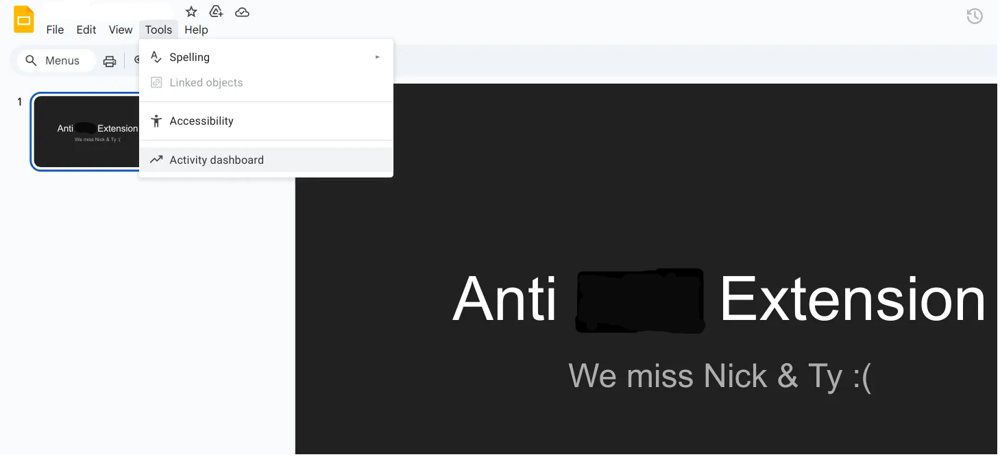

Despite Canvas's official documentation stating that, "Quiz logs should not be used to validate academic integrity or identify occurrences of cheating," instructors still falsely accuse many honest students of cheating using this faulty data. This extension blocks event listeners that Canvas uses to attempt to detect when a user leaves a website or the page is minimized/loses focus. This will not interfere with other Canvas functionality and logging or provide any unfair academic advantage. Instructors can still see IP address, device identifiers, how long a user spent on each question, and more. For maximal privacy save all course materials locally! Canvas has an export course feature!
The following tracking methods are now blocked on all Canvas sites:
✓ Your Canvas activity will appear normal while protection is active
On enterprise Google accounts, the owners of slides/docs/etc. can see when you accessed a page. This functionality has been used to falsely accuse students of accessing materials during exams. Having a browser tab open is not cheating! Instructions below on how to disable this tracking!
In any Google Doc or Slides document, go to Tools → Activity dashboard
Once in the Activity dashboard, click on Privacy settings in the left sidebar
Turn OFF both toggles:
Important: You must disable BOTH settings to prevent document owners from seeing your view history.
After completing the steps above, check this box to stop seeing warning popups on Google Docs/Slides:
Note: This checkbox only controls whether you see warning popups. You must actually disable the settings in Google for true privacy protection.